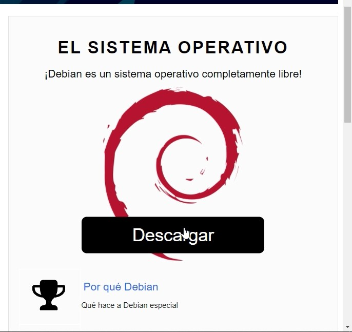
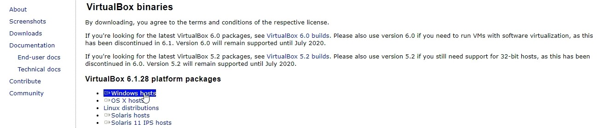
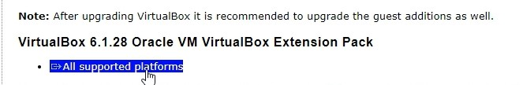
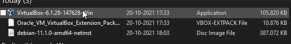
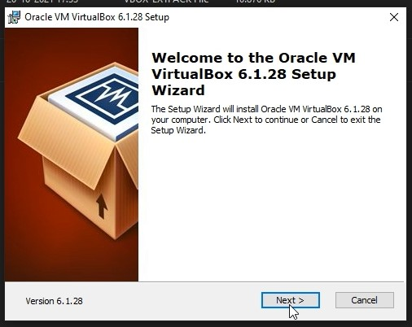
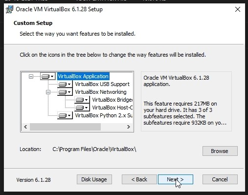
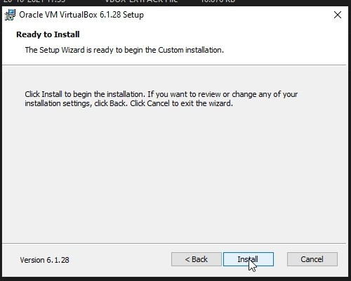
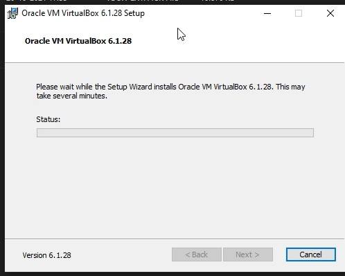
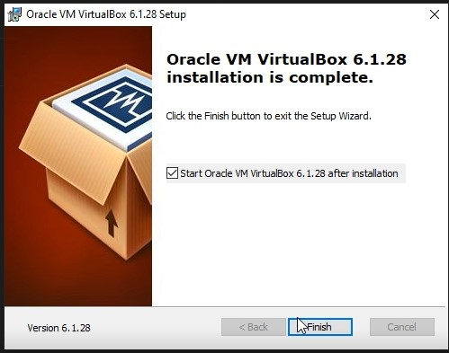
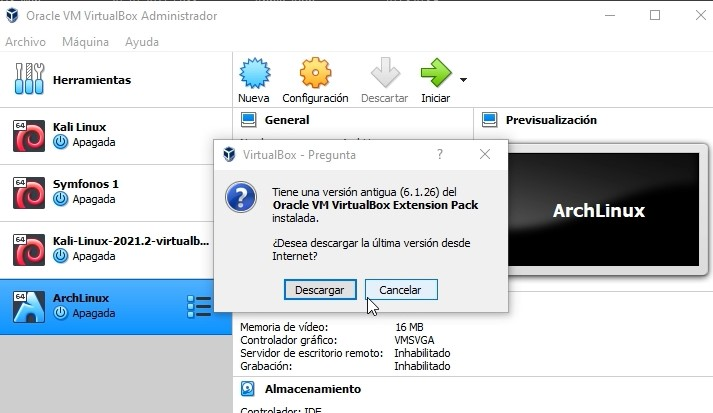

Instalación de VirtualBox
Pues al ser una entrada, lo primero que quiero aclarar es que quiero ayudarte a que descargues e instales VirtualBox, junto al ISO del sistema operativo Debian para que puedas tener tu propia máquina a disposición, pasarte los enlaces de la página de ambos programas y pueda hacer todo esto un poco más sencillo.
Descargando Debian y VirtualBox
Bien, lo primero que haremos será irnos a las páginas de VirtualBox y Debian(pueden encontrarse con buscarse en Google, pero te las dejaré de igual modo); al dirigirnos a Debian, simplemente apretamos en descargar y comenzara de forma automática a descargar la ISO.
Ya pues para VirtualBox es algo similar, la diferencia es que esta vez se descargaran dos programas, uno es el instalador de Vbox, para eso te diriges a Windows host y cliqueas, luego la descarga comenzara, pero aquí no acaba, ya que requerirás de las Guest Additions, un conjunto de utilidades de VBox y controladores, yo en lo personal lo utilizo para cambiar las resoluciones, pero eso lo explicaré en otra parte, con estas dos herramientas ya podemos proceder a instalar el programa de Vbox tranquilamente.
 Instalando VirtualBox
Pues bueno, no hay mucho que agregar, si quieres una configuración común de usuario, es dar clic en siguiente hasta que la instalación comience, y así una vez termine, tener Vbox en tu computadora. Una vez instalado nos pedirá descargar el GuestAdditions, en caso de que no nos pidiese, lo descargamos de la página como lo dije anteriormente, ya con esto una vez abramos el programa, podemos iniciar armando nuestra máquina virtual.
      